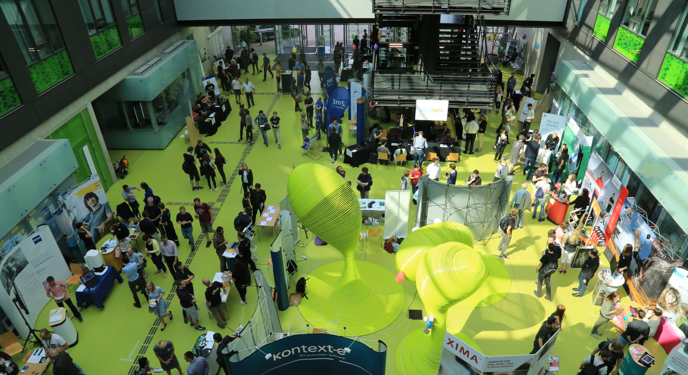

Veranstaltungen
Alle hier genannten Veranstaltungen werden kurz bevor sie tatsächlich stattfinden auch auf sozialen Medien und über Plakate in der Fakultät beworben. Schaut für detaillierte Informationen also regelmäßig auf Facebook, Instagram, Twitter oder auf unserer Webseite vorbei. Zudem betreiben wir auch einen Telegramkanal, über den wir dich ebenfalls auf dem Laufenden halten.
Spieleabende
Etwa einmal im Monat wird in der Fakultät ein Spieleabend vom FSR ausgerichtet. Start ist jeweils um 18:30 Uhr im Foyer. Dabei stellt der FSR sein umfangreiches Angebot an analogen Spielen zur Verfügung, sodass eine ganze Menge an Spielen schon von Haus aus da ist. Willst du etwas spielen, was nicht da ist, bring es am besten mit. Oft sind auch schnell Leute gefunden, die mal ein neues Spiel ausprobieren wollen.
Hin und wieder finden sich auch ein paar Leute, die an dem Abend ihre Notebooks mitbringen und eine kleine LAN-Party schmeißen oder ihre Spielekonsole mitbringen, um über einen der Beamer der Seminarräume mit anderen zusammen zu spielen.
Für Knabbereien und Getränke wird gesorgt, das ascii hat
in der Regel zu Spieleabenden geöffnet. Wenn das Wetter mitspielt, ist
auch das Count Down, ein Dresdner Studentenclub, zur Stelle und
verkauft Gegrilltes sowie alkoholische Getränke.
Es lohnt sich also auf jeden Fall, vorbeizuschauen und bei einer Mate und einer frischen Bratwurst oder etwas Grillkäse neue Leute kennenzulernen!
Stammtische
Wolltest du deine liebste Lehrperson schon immer mal etwas persönlicher kennenlernen? Der halbjährlich stattfindende Stammtisch bietet genau diese Möglichkeit. Hierbei setzt du dich völlig entspannt mit den beiden teilnehmenden Lehrpersonen in einem Studentenclub zusammen und kannst alle Fragen stellen, die dir schon lange oder vielleicht auch noch nicht so lange auf der Zunge brennen. Dies betrifft nicht nur fachliche, sondern vielmehr auch persönliche Fragen. Auch die teilnehmenden Lehrenden freuen sich hierbei über rege Beteiligung der Studierenden!
Schreibcafé
Du musst eine Arbeit schreiben, kommst aber einfach beim Schreiben
nicht weiter? Hilfe gibts im Normalfall jeden Donnerstag im Schreibcafé
im ascii. Hier sind Schreibtutoren vom Schreibzentrum, die
dir mit Arbeitstechniken und Feedback helfen, mit deiner Seminar- oder
Abschlussarbeit weiterzukommen. Zusätzlich ist fast immer jemand
anwesend, der dir bei einer Tasse Kaffee mit deinen LaTeX-Problemen
helfen kann. Aufgrund der aktuellen Lage bezüglich Covid-19 findet das
Schreibcafé nicht wie gewohnt wöchentlich und in Präsenz statt. Sobald
dies der wieder der Fall ist, wirst du über unsere sozialen Medien und
Plakate vor dem ascii darüber informiert. Solltest du doch
dringend Hilfe benötigen kannst du dich natürlich jederzeit an den FSR
wenden.
Dies Academicus
Der Dies Academicus ist ein vorlesungsfreier Tag, an dem du andere Fachbereiche und Hochschulgruppen kennenlernen kannst. Auf dem ganzen Campus gibt es Workshops, Kulturveranstaltungen und vieles mehr, bei denen du die Vielfalt des Campus kennenlernen kannst.
Lange Nacht der Wissenschaften
In der Langen Nacht der Wissenschaften öffnen die Universität und andere Forschungseinrichtungen ihre Türen und bereiten ein Abendprogramm vor, in dem sie vermitteln, woran sie arbeiten. Hier kannst du dir anschauen, was in den anderen Bereichen der Universität passiert. Oft bietet das ZIH an diesem Tag auch Führungen durch das durchaus beeindruckende Rechenzentrum an.
OUTPUT.DD
Die OUTPUT.DD findet einmal im Jahr statt. Das erklärte Ziel dieser Veranstaltung ist es, der breiten Öffentlichkeit die Ergebnisse aus Lehre und Forschung zu präsentieren. Zu diesem Zwecke kommen einige große Unternehmen an unsere wunderschöne Fakultät und präsentieren sich im Foyer. Für dich als Studierenden unserer Fakultät bietet dies die Chance, dich mit den Unternehmen der Region vertraut zu machen und in ungezwungenem Rahmen mit diesen ins Gespräch zu kommen. Dies kann ein gutes Sprungbrett für eventuelle Praktika oder Werkstudententätigkeiten sein. Des Weiteren gibt es oft kleine Gewinnspiele und Wettbewerbe mit Preisen für die Besucher. Ein Besuch der OUTPUT sei dir also hiermit ans Herz gelegt. Es lohnt sich!
 OUTPUT: Studierende stellen ihre Projekte und Firmen sich selbst vor. – Foto: Lucas Vogel
ESE
Die Erstsemestereinführung (kurz ESE) findet jedes Jahr Anfang Oktober statt, um die neuen Studierenden unserer Fakultät zu begrüßen und sie in das Studium einzuführen. Veranstaltet wird diese vom FSR, der meist bereits kurz nach einer abgeschlossenen ESE damit beginnt, die Nächste zu planen. Wie du dir sicherlich vorstellen kannst, ist das ziemlich viel Arbeit, zumindest, wenn keiner dabei hilft.
Hier kommst du ins Spiel. Du fandest deine ESE super und möchtest dafür sorgen, dass auch alle weiteren Erstis eine super ESE haben? Oder fandest du deine ESE absolut grausam und hast tausend Ideen wie man es besser machen könnte? Dann melde dich doch bei uns im FSR-Büro und hilf uns beim Stemmen der nächsten Iteration der ESE! Wir freuen uns über jede Hilfe. :)